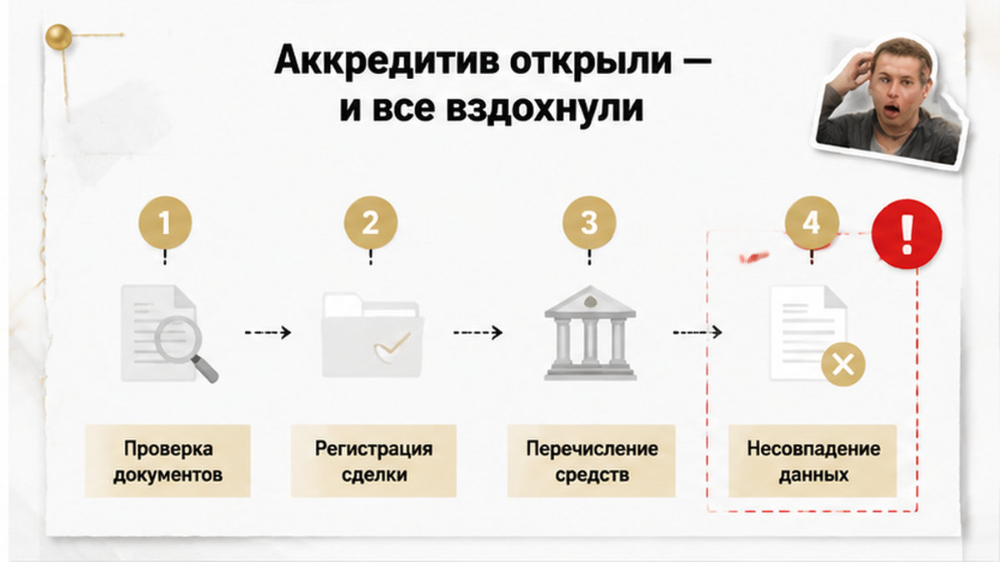
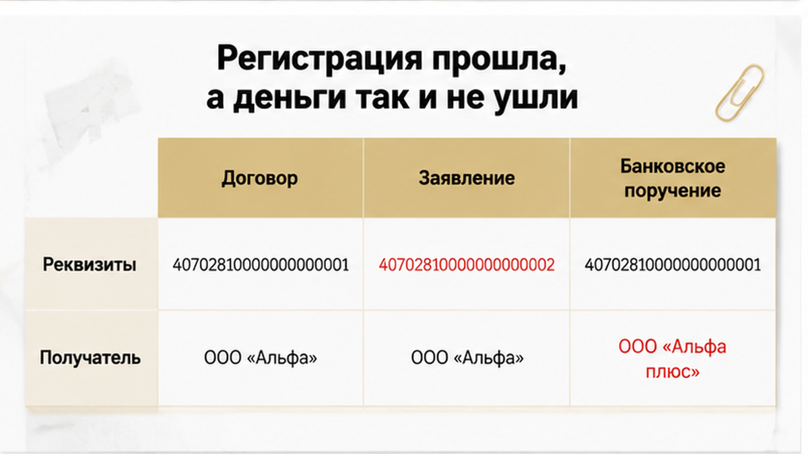
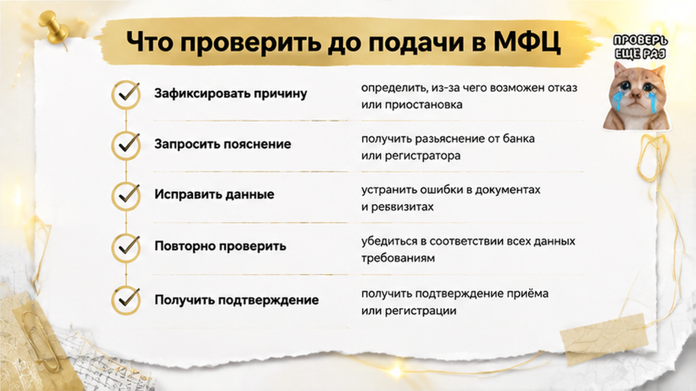

Сделка выглядела как в учебнике: банк, аккредитив, ни одной купюры на столе и никаких «встретимся у ячейки в четверг». Тюменская пара покупала двушку на вторичке — в модели этого случая около 8,2 млн рублей, безотзывный покрытый аккредитив на 45 дней, комиссия банку в пределах 2500–3500 рублей. Росреестр зарегистрировал переход права без единого замечания, покупатель стал собственником, продавец поехал за деньгами с выпиской ЕГРН на руках. В отделении ему сказали, что раскрыть аккредитив нельзя: описание объекта в заявлении и в договоре не совпадает. Квартира к этому моменту уже чужая, деньги лежат в двух шагах — и продавец до них не дотягивается. Ни мошенничества, ни подделки: просто две строчки, набранные по-разному.
Я, Святослав Шакин, риэлтор в Тюмени (The Риэлтор), разбираю здесь собирательный, смоделированный случай — без имён, адреса, названия банка и номера дела. Схема ошибки при этом рабочая до неприличия: за такой сценарий в год цепляются десятки сделок, и почти всегда по одной причине. Открытие аккредитива путают с выплатой.
Если у вас впереди расчёты через аккредитив и вы не уверены, что формулировки в договоре и в банковском заявлении совпадают, — напишите до подписания: Telegram или MAX. Сверить документы — полчаса. Разворачивать сделку — недели.

Момент открытия аккредитива психологически закрывает сделку. Покупатель внёс сумму, банк выдал подтверждение, продавец увидел бумагу с числом — и дальше обе стороны ведут себя так, будто расчёт уже произошёл. А произошло другое: банк принял на себя обязательство заплатить, если ему принесут строго определённый комплект документов. Не «заплатил». Обещал заплатить по условиям, которые кто-то напечатал за пятнадцать минут в операционном зале.
В нашем казусе заявление на аккредитив и договор купли-продажи разошлись в трёх местах. Отчество продавца: в одном документе полностью, в другом с опечаткой в одну букву. Адрес: в договоре корпус указан цифрой «2», в заявлении — римской «II», как было в старой правоустанавливающей бумаге. И самое тяжёлое — формулировка условия раскрытия: стороны в договоре написали одно основание, а менеджер в банке оформил типовое, сформулированное чуть иначе.
В день подписания ни одна из этих деталей не выглядела проблемой. Все находились в одном кабинете, все видели паспорт продавца, все понимали, о какой именно квартире речь. Но банк в момент раскрытия работает не с пониманием, а с текстом. Он сверяет буквально: символ в символ, строка в строку. Он не додумывает, что корпус II и корпус 2 — это один и тот же дом на одной и той же улице, потому что за додумывание банк отвечает деньгами плательщика.
Это близкий родственник другой типовой истории, где документы по продавцу перестают сходиться между собой. Там разъехался состав собственников, здесь — описание объекта. Механика одинаковая: пока никто не сел и не свёл пакет целиком, все уверены, что мелочь не помешает.

В МФЦ сдали договор, заявления, оплатили пошлину. Росреестр отработал штатно — и это важно понять: у регистратора нет задачи сверять ваш договор с банковским заявлением на аккредитив. Он проверяет основание перехода права и данные объекта по своим реестрам. Бумага, которая лежит в чужом банке, для регистрации нерелевантна. Право покупателя зарегистрировали без замечаний.
Продавец получил выписку ЕГРН, где собственником значился уже не он, и поехал за деньгами. Принёс договор, выписку, паспорт. Операционист сверил предъявленное с условиями аккредитива и отказал: описание объекта не соответствует условию раскрытия. Формально — всё правильно. Фактически — человек в один день остался и без квартиры, и без денег.
Покупатели при этом искренне не понимали, в чём проблема. Логика у них была простая: деньги внесены, аккредитив открыт, продавец считай рассчитан, банк просто тянет. Вот эта иллюзия — ядро всей истории. Она стоит в одном ряду с ситуацией, где расписка написана, а денег на счёте нет: бумага существует, обязательство описано словами, а перевода не было.
Дальше вылезла деталь, которая обычно всплывает поздно и не вовремя. Аккредитив был безотзывный. То есть покупатель не может прийти в банк и сказать «отмените, верните мои деньги» — без согласия получателя средств такой аккредитив не закрывается, так устроены статьи 867–873 ГК РФ. Деньги повисли в подвешенном состоянии сразу для обеих сторон.
Дальше было четыре дня переговоров. На столе лежало три варианта: переоформить условия аккредитива с согласия сторон, дождаться истечения срока и вернуть деньги покупателю или расторгнуть сделку целиком.
Первый вариант упёрся в стену: банк требовал привести формулировки в соответствие с договором, а договор уже был исполнен и лёг в основание зарегистрированного права. Правки задним числом в него не внести. Второй означал, что продавец сидит до конца сорока пяти дней — всё это время не собственник и без денег. Стороны выбрали третий.
Подписали соглашение о расторжении, продавец дал согласие на закрытие аккредитива, деньги вернулись покупателю, право переоформили обратно. Суда не было — и это лучший из возможных исходов, честно. Но цена всё равно набежала: около трёх недель потерянного времени, повторная пошлина, невозвратная комиссия банка за открытие аккредитива и квартира, которая заново вышла в продажу — теперь уже с историей «сделка сорвалась», о которой спрашивает каждый следующий покупатель.
И вопрос, который я хочу вынести в комментарии, потому что именно на нём в этом казусе всё и поехало: если аккредитив уже открыт — деньги действительно можно считать полученными, или нужно ждать раскрытия после регистрации?
Здесь ломается логика половины сделок на вторичке. Покупатель подписывает заявление, деньги уходят с его счёта — и в голове щёлкает: всё, рассчитались. Продавец видит ту же картинку со своей стороны: сумма зарезервирована, бумага на руках, значит деньги фактически его. Ошибаются оба.
Открытие аккредитива — это обязательство банка заплатить. Не платёж. Деньги уходят с расчётного счёта покупателя на специальный счёт покрытия и там замирают. Продавцу они не принадлежат: он не может ими распорядиться, снять, направить на встречную покупку. Он получит их только тогда, когда принесёт документы, буква в букву совпадающие с условиями из заявления.
Раскрытие — отдельная процедура, и это ключевое слово. Продавец приходит с выпиской ЕГРН и договором, операционист садится сверять. Банк не оценивает сделку по смыслу: он не Росреестр и не суд, он не выясняет, «та ли это квартира» и «тот ли человек». Сотрудник сравнивает строки. Если в условиях аккредитива объект описан одним набором символов, а в поданной выписке — другим, у банка нет права додумать за стороны. Он отказывает.
Это не вредность и не формализм ради формализма. Банк отвечает деньгами перед плательщиком: выплатил по несовпадающим документам — сам и виноват. Поэтому в тюменских отделениях отказ звучит буднично, без драмы: «описание объекта не соответствует условиям». Одна фраза — и сделка, которую все считали закрытой, повисает на неделю минимум.
Похожий эффект возникает всюду, где деньги существуют только на бумаге. В истории про расписку, под которую на счёте ничего не оказалось, стороны точно так же приняли документ за факт расчёта. Разница в том, что аккредитив честнее: деньги реально есть. Просто лежат не там, где все думают, и открываются не по договорённости, а по тексту.
Посмотрите, откуда берутся бумаги. Заявление на аккредитив набирает сотрудник банка по шаблону, договор готовит юрист или риэлтор, выписку формирует Росреестр. Три источника — три написания.
Вот как это выглядит у окна в банке, когда продавец уже приехал за деньгами.
| Что сверяет банк | Как бывает в ДКП | Как бывает в заявлении на аккредитив | Решение банка при расхождении |
|---|---|---|---|
| Адрес объекта | «корпус 2» | «корп. II» | Отказ: описание объекта не совпадает |
| Кадастровый номер | Указан полностью | Пропущен или с опечаткой в одной цифре | Отказ, идентификация невозможна |
| ФИО получателя | С отчеством по паспорту | Отчество сокращено или пропущено | Отказ: получатель не идентифицирован |
| Сумма | Цена по договору | Сумма за вычетом задатка | Отказ либо спор о доплате вне аккредитива |
| Реквизиты счёта | Не указаны | Счёт закрыт или указан старый | Платёж не проходит, возврат в банк |
| Условие раскрытия | «после регистрации перехода права» | «при предъявлении зарегистрированного ДКП и выписки ЕГРН» | Отказ, если хотя бы одного документа нет |
Задержитесь на последней строке таблицы: «после регистрации» и «при предъявлении документов» — не синонимы для банка.
Реакция покупателя после отказа предсказуема до слова: «Ладно, верните деньги, рассчитаемся по-другому». И вот тут до людей доходит смысл слова, на которое при подписании заявления никто не смотрел.
Безотзывный — значит, в одностороннем порядке его не отменить и не изменить. Так устроены нормы о расчётах по аккредитиву в Гражданском кодексе, статьи 867–873. Плательщик открыл аккредитив в пользу конкретного получателя — и с этой минуты распоряжается им уже не он один. Хотите досрочно забрать деньги — нужно согласие продавца. Хотите исправить одну букву в адресе, чтобы банк наконец раскрыл платёж, — тоже нужно согласие продавца, отдельное заявление об изменении условий, а иногда и новый тариф.
В нормальной сделке это техника: обе стороны подписывают изменение, деньги уходят. Проблема начинается, когда после регистрации интересы разъезжаются — покупатель уже собственник, продавец без денег, и безотзывный аккредитив держит обе стороны.
Второй путь — ждать истечения срока аккредитива (30–90 дней). Деньги вернутся плательщику, но для обеих сторон это недели простоя.
На вторичке срок жёстче, чем на эскроу в новостройке — как в истории про перенос ключей на год. Аккредитив не ждёт стройку — он ждёт бумагу с правильным адресом.
Сверить ДКП, заявление на аккредитив и данные ЕГРН между собой — работа на один вечер до подачи в МФЦ. Напишите, покажу, что именно банк будет читать буквально: Telegram или MAX.

Весь наш казус упирается в один день. Между подписанием договора и подачей документов в МФЦ был день, за который всё исправлялось бесплатно и за полчаса. Никто не положил два листа рядом и не прошёл по ним строчку за строчкой. Цена ошибки за сутки выросла с нуля до трёх недель, повторной пошлины и невозвратной комиссии.
Сверять надо не «по смыслу», а буквой. Документы приходят из трёх независимых источников и сами по себе совпадать не начнут — они совпадают только тогда, когда кто-то сел и заставил их совпасть. Вот что я открываю рядом перед подачей.
И это же место, где вылезают вещи посерьёзнее опечаток. Продавец в документах один, а фактических собственников больше. Или подписывает представитель по доверенности, а сам владелец на связь выходит неохотно. Тогда расхождение в бумагах — уже не техническая мелочь, а симптом, и разбирать его надо не с банком, а с составом продавцов: доверенность не броня — продавец прилетел один, а квартиру продавали четверо.
Ну и главный вопрос, из-за которого в нашем казусе всё и поехало. Если аккредитив уже открыт — деньги действительно можно считать полученными, или нужно ждать раскрытия после регистрации? Напишите в комментариях, как вы это понимали до своей сделки: по моему опыту, каждый второй покупатель искренне уверен, что открытый аккредитив и есть оплата.
В сделке одновременно идут два секундомера, и друг о друге они не знают. Первый — регистрация перехода права: через МФЦ обычно несколько рабочих дней, но стоит регистратору увидеть спорную строку — приостановка, и срок растягивается на месяцы. Второй — срок жизни самого аккредитива: чаще всего от 30 до 90 дней, в нашем случае банк отмерил 45.
Пока оба таймера идут ровно, разницы между ними не видно вообще. Она проявляется в одном сценарии: регистрация встала, а аккредитив спокойно досчитывает свои дни. Если срок истечёт раньше, чем продавец принесёт в банк корректный комплект, непринятые деньги уходят обратно плательщику. И вот здесь получается конструкция, от которой холодеет: право собственности уже перешло, а деньги вернулись тому, кто квартиру получил.
Продлить аккредитив можно — но это не «само собой» и не по звонку. Нужно согласие обеих сторон, визит в банк, заявление, чаще всего ещё одна комиссия. В выходные это не делается, в отпуске второй стороны — тоже. Поэтому срок закладывают не по красивому плану, а по худшему сценарию: с запасом на приостановку и на то, чтобы успеть переписать бумаги.
Здесь же хорошо видно, чем вторичка с аккредитивом отличается от новостройки. На эскроу деньги лежат до ключей, застройщик до них не дотягивается — зато покупатель ждёт ровно столько, сколько идёт стройка, как в истории, где ключи перенесли на год, а деньги на эскроу заморозили. Аккредитив короче и жёстче. Он не ждёт стройку. Он ждёт бумагу с правильным адресом — и, если бумага не пришла, просто закрывается.
Первое, чего делать не надо, — бежать в суд. В казусе, с которого мы начали, суда не было вовсе: четыре дня переговоров, соглашение о расторжении, закрытый аккредитив, деньги у покупателя, право обратно у продавца. Самой дорогой статьёй расходов оказались не юристы, а три потерянные недели и невозвратная комиссия банка.
Второе, что придётся принять: безотзывный аккредитив покупатель в одиночку не закроет. Отменить его без согласия получателя нельзя — так устроены нормы ГК о расчётах по аккредитиву, статьи 867–873. Значит, любой выход лежит через договорённость, а не через ультиматум и не через «я вам сейчас покажу».
Рабочих направлений, по опыту, три. Самое быстрое — исправить расхождение и подать документы повторно: если спотыкается описание объекта или отчество, стороны подписывают допсоглашение и приводят формулировки к тому, что стоит в ЕГРН. Второе — продлить срок аккредитива, пока идёт исправление, чтобы деньги не улетели обратно по таймеру, пока все переписываются. Третье, если договориться о цене и условиях уже не выходит, — расторжение по соглашению с обратным переходом права.
Общее у всех трёх одно: нужна вторая сторона на связи и заинтересованная. Поэтому конфликт «регистрация прошла, деньги не ушли» лечится в первые дни, пока люди ещё разговаривают, а не через месяц взаимных претензий. Механика знакомая: бумага о деньгах есть, а денег у продавца нет — ровно как в разборе про расписку на квартиру, под которую на счёте ничего не оказалось. И зеркальный случай, где первой расходится не оплата, а регистрация: ипотеку одобрили, а регистрацию отменили из-за строки в ЕГРН.
Вывод из этой истории точно не в том, что аккредитив опасен. Аккредитив как раз отработал безупречно: банк не отдал чужие восемь миллионов по документу, который не совпадал с условиями. Опасной была уверенность, что открытый аккредитив — это уже оплата, и что бумаги «в целом сходятся».
Вторичку в Тюмени спокойно покупают и через аккредитив, и через ячейку. Всё держится на одном скучном действии: кто-то садится и кладёт рядом ДКП, заявление на аккредитив и выписку из ЕГРН — до похода в МФЦ, а лучше до аванса, когда поправить букву в адресе стоит ноль рублей и десять минут. После регистрации та же буква стоит недели переговоров и невозвратной комиссии. Вся разница — в том, на каком этапе появился человек, который читает документы буквой, а не по смыслу.